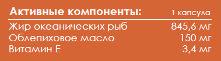
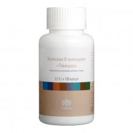
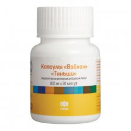

Капсулы с глюкозамином «Тяньши»Глюкозамин относят к классу природных веществ, защищающих хрящи и суставы. Основная роль глюкозамина в организме человека – стимуляция выработки веществ, способствующих восстановлению хрящевой ткани. «Капсулы с глюкозамином «Тяньши» помогут вам чувствовать себя здоровым и активным и жить комфортной полноценной жизнью! Рекомендован для: Преимущества продукта: Дозировка: взрослым по 3 капсулы 2 раза в день во время еды. В БАДе содержатся активные компоненты, поэтому при одновременном применении продукции с одинаковыми питательными веществами в составе не следует превышать рекомендуемую дневную норму. Упаковка: 400 мг × 60 капсул.
Противопоказания: |
Омега-3 30 % с облепиховым маслом и витамином ЕЯвляется дополнительным источником полиненасыщенных жирных кислот омега-3, омега-6, витамина Е и каротиноидов, нормализует обменные процессы, повышает устойчивость организма, восстанавливает организм после перенесенных заболеваний различной этиологии. С «Омега-3 30 % с облепиховым маслом и витамином Е» вы сохраните свое здоровье и отличное настроение! Рекомендована для: Преимущества продукта: Дозировка: взрослым и детям старше 14 лет по 1 капсуле 1–3 раза в день во время еды. Упаковка: 1400 мг × 50 капсул.  Противопоказания: |
Капсулы «Гэлакс» «Тяньши»Мужская сила – это, прежде всего, настоящий мужской характер. Способность принимать важные решения и выполнять поставленные задачи, надежность, стабильность, уверенность в завтрашнем дне! Важно помнить, что в любом возрасте мужчине для полноценных взаимоотношений важен отказ от вредных привычек, регулярная физическая активность, а также использование высококачественных средств оздоровления «Капсулы «Гэлакс» «Тяньши» для мужчин, созданных побеждать! Сделать приятное и преподнести сюрприз тому, кого любишь и ценишь, совсем несложно – наполните жизнь радостью и новыми впечатлениями для себя и своей второй половинки! Рекомендована для: Преимущества продукта: Дозировка: взрослым по 1 капсуле 2 раза в день во время еды. При не- обходимости прием повторить. Упаковка: 500 мг × 4 капсулы.
Противопоказания: |
Чай «Тяньши»В состав чая «Тяньши» входят такие компоненты, как: гиностемма, листья лотоса, горец многоцветковый, зеленый чай, сенна притупленнолистная, которые активизируют обмен веществ, усиливают энергетический потенциал, регулируют вес. Рекомендована для: Состав: Дозировка: взрослым 1–2 пакетика на 200 мл воды. Противопоказания: Упаковка: 1,5 г × 40 пакетиков. |
Целебные капсулы «Тяньши»Гиностемма предупреждает процессы старения, усиливает энергетический потенциал, нормализует давление, улучшает память, снижает уровень холестерина. Продукт питает организм витаминами группы В, D, Е, РР, С, а также содержит необходимые питательные вещества, например, флавоноиды, лецитин, каротиноиды. Полифенолы чая обладают целым рядом целебных для человека свойств: противоокислительным, противовоспалительным и антибактериальным действиями. Рекомендована для: Функции: Состав: морковный порошок, экстракт гиностеммы пятилистной, полифенолы чая, витамин С, стеарат магния. Дозировка: взрослым по 4 капсулы 2 раза в день во время еды. Противопоказания: индивидуальная непереносимость компонентов, беременность, кормление грудью. Не является лекарственным средством. Упаковка: 0,3 г × 150 капсул.
|
|

Хитозан в капсулах «Тяньши»Хитозан – это природный полимер (клетчатка животнго происхождения), получаемый из хитина. Он является мощным сорбентом, т.е. очищает организм от вредных и ток сических веществ, способствует снижению массы тела. Рекомендована для: Функции: Состав: хитозан. Дозировка: взрослым по 3 капсулы 3 раза в день во время еды. Противопоказания: индивидуальная непереносимость компонентов, беременность, кормление грудью. Не является лекарственным средством. Упаковка: 0,15 г × 100 капсул.
|
Капсулы с ресвератролом «Тяньши»Ресвератрол – мощный природный антиоксидант, который замедляет клеточное старение и способствует продлению жизни клеток, обладает иммуномодулирующим и противовоспалительным действиями, улучшает микроциркуляцию крови в органах и тканях, замедляет процессы старения. Рекомендована для: Функции: Состав: изомальтоолигосахариды, экстракт виноградных косточек, крахмал, стеарат магния, витамин С. Дозировка: взрослым по 2 капсулы 2 раза в день во время еды. Противопоказания: индивидуальная непереносимость компонентов, беременность, кормление грудью. Не является лекарственным средством. Упаковка: 0,35 г × 60 капсул.
|
|

Капсулы «Вэйкан» «Тяньши»Ресвератрол – мощный природный антиоксидант, который замедляет клеточное старение и способствует продлению жизни клеток, обладает иммуномодулирующим и противовоспалительным действиями, улучшает микроциркуляцию крови в органах и тканях, замедляет процессы старения. Рекомендована для: Функции: Состав: масло зародышей пшеницы, лецитин, бета-каротин. Дозировка: взрослым по 1 капсуле 2 раза в день во время еды. Противопоказания: индивидуальная непереносимость компонентов. Не является лекарственным средством. Упаковка: 0,8 г × 30 капсул.
|
Таблетки с целлюлозой «Тяньши»Сочетание растворимых и нерастворимых пищевых воло кон, входящих в состав данного уникального продукта, обе спечивает поддержание в норме глюкозы крови и улучшение работы кишечника. Пищевые волокна необходимы для фор мирования и поддержания нормальной микрофлоры кишечника. Это профилактика дисбактериоза, обеспечение нормального усвоения питательных компонентов и повышение иммунитета. Рекомендована для: Функции: Состав: полидекстроза, порошок плодов боярышника кроваво-красного, гидроксипропилцеллюлоза, кукурузная целлюлоза, крахмал, желатин, микрокристаллическая целлюлоза, тальк, аспартам, стеарат магния. Дозировка:
взрослым по 3–4 таблетки 3 раза в день во время еды. Противопоказания: индивидуальная непереносимость компонентов, беременность, кормление грудью, язвенная болезнь желудка и двенадцатиперстной кишки в стадии обострения, острые воспалительные заболевания желудочно-кишечного тракта, кишечная непроходимость, фенилкетонурия. Не является лекарственным средством. Упаковка: 1 г × 70 таблеток.
|
Напиток«Тай Нэн»«Тяньши»Hапиток растительного происхождения, содержит в высо кой концентрации аминокислоты аланин и лейцин, которые способствуют регуляции энергетического метаболизма, помогают сдерживать повышение концентрации алкоголя в крови. Показания к применению: Функции: Состав (на 50 мл): Дозировка: взрослым по 1 флакону 1–2 раза в день во время еды. Продолжительность приема:
1 месяц.
Противопоказания:
индивидуальная непереносимость компонентов продукта, беременность, кормление грудью. Не является лекарственным средством.
Упаковка:
50 мл х 10 флаконов.
|
Страницы: